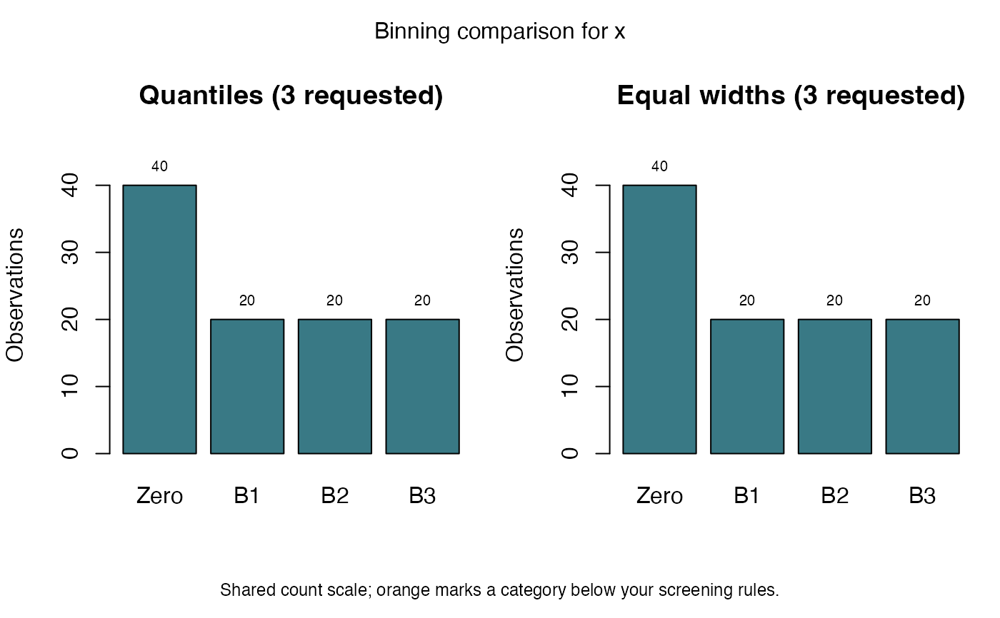
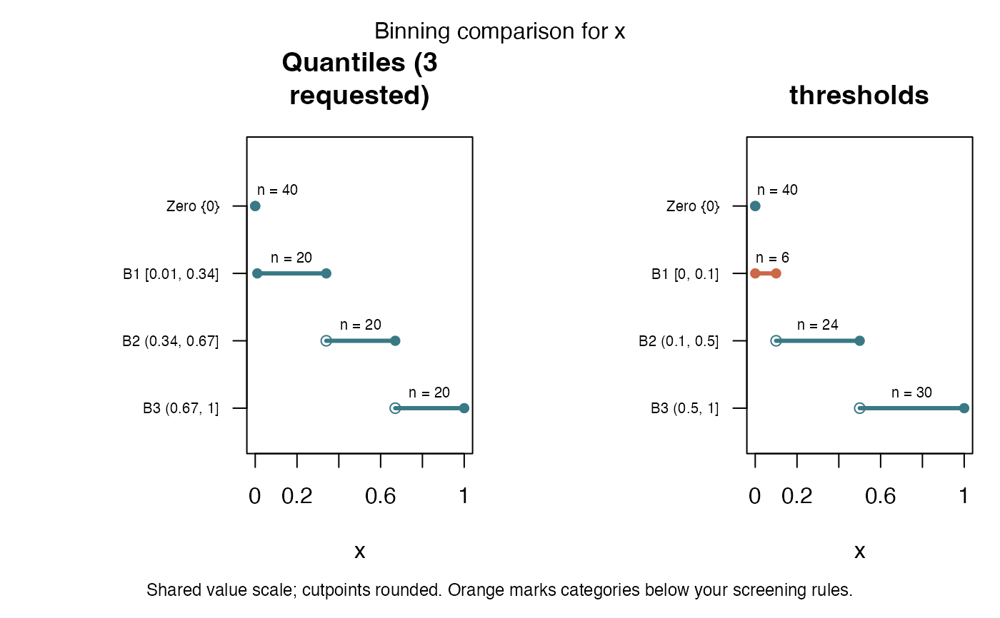

Compare Candidate Binning Schemes
bin_compare.RdCompare category counts, cutpoints, and observed within-category spread across several schemes applied to the same numeric column.
Usage
bin_compare(data, variable, bins = 4L,
methods = c("quantile", "equal_width"),
custom_breaks = NULL, separate_zero = FALSE,
min_count = 20L, min_prop = 0.01)Arguments
- data
A data frame.
- variable
One quoted column name identifying a plain numeric or integer vector.
- bins
Unique whole numbers from 2 to 1000. Each requested count is paired with each automatic method. Ignored for custom schemes.
- methods
Unique choices from
c("quantile", "equal_width"). Usecharacter(0)to compare only custom schemes.- custom_breaks
An optional named list of numeric boundary vectors. Each vector must be finite, strictly increasing, and cover the values to be binned, including endpoints. Names must be unique, nonempty, and different from automatic names such as
"quantile_4".- separate_zero
Use a separate exact-zero category in every scheme. Requires nonnegative data. Requested interval counts exclude this category.
- min_count, min_prop
Sparse-bin screens shared by every scheme. A category is flagged if its count is less than
min_countor its proportion of all finite rows is less thanmin_prop. Defaults are 20 and 0.01.
Details
Each scheme uses bin_diagnose. Missing and infinite values are
excluded consistently. Ties remain together, duplicate automatic boundaries
collapse, and empty bins are retained. Intervals include their upper boundary;
the first includes its lower boundary. If requested, zeros are assigned first.
The comparison records requested and retained interval counts separately from the additional zero category. Size summaries include empty bins and the zero category. Percentages use all finite rows. The widest observed within-bin range is the largest difference between observed extrema in a nonempty category, not the width between its nominal cutpoints. It is measured in the original variable's units. Empty bins are excluded from this range calculation. Ties for widest range select the first category. An extreme range difference can overflow to Inf even though both observed endpoints are finite.
Small tail groups may be intentional. Observed ranges describe retained within-category variation; they are not information-loss scores or tests. No best scheme is automatically selected. Per-scheme diagnostic notes are stored without emitting warnings; invalid inputs stop the whole comparison with an error naming the scheme. No partially evaluated comparison is returned. The original data are not modified. Schemes and assignments are kept in memory, so large data and many requested schemes can require substantial memory.
Value
A bin_comparison list.
- comparison
One row per scheme. Columns include scheme, method, requested intervals, retained intervals, zero_bins, total_bins, occupied, empty, sparse, smallest_n, largest_n, smallest_pct, largest_pct, widest_bin, observed_min, observed_max, and widest_range. The last four describe the widest observed within-bin range.
- bins
All per-bin tables with an added scheme column, including exact cutpoints, observed summaries, counts, proportions, and sparse flags.
- diagnoses
Named list of full
bin_diagnosisobjects. Use these for per-scheme assessments, notes, and assignments aligned to the original rows.- assessment
Plain-language comparison as a character vector.
- call, variable, separate_zero, min_count, min_prop
Call and shared settings.
Examples
d <- data.frame(x = c(rep(0, 40), seq(.01, 1, length.out = 60)))
comparison <- bin_compare(d, "x", bins = c(3, 5), separate_zero = TRUE,
custom_breaks = list(thresholds = c(0, .1, .5, 1)))
comparison
#> binwise comparison of x
#>
#> * All 5 schemes use the same 100 finite observations; 0 missing and 0 infinite values are excluded.
#> * Every scheme keeps exact zeros separate. Requested intervals exclude this additional category; size and sparse-bin summaries include it.
#> * quantile_3 produces 3 intervals plus 1 zero category, with 0 empty and 0 flagged categories. Its largest category contains 40.00% of the sample; its widest observed within-bin range runs from 0.68119 to 1.
#> * quantile_5 produces 5 intervals plus 1 zero category, with 0 empty and 5 flagged categories. Its largest category contains 40.00% of the sample; its widest observed within-bin range runs from 0.41271 to 0.59729.
#> * equal_width_3 produces 3 intervals plus 1 zero category, with 0 empty and 0 flagged categories. Its largest category contains 40.00% of the sample; its widest observed within-bin range runs from 0.68119 to 1.
#> * equal_width_5 produces 5 intervals plus 1 zero category, with 0 empty and 5 flagged categories. Its largest category contains 40.00% of the sample; its widest observed within-bin range runs from 0.41271 to 0.59729.
#> * thresholds produces 3 intervals plus 1 zero category, with 0 empty and 1 flagged categories. Its largest category contains 40.00% of the sample; its widest observed within-bin range runs from 0.51339 to 1.
#> * Use category sizes to assess balance and within-bin ranges to assess which values are grouped together. A small tail category can be intentional. These summaries do not select a best scheme.
#>
#> Category counts and sizes
#> scheme requested intervals zero_bins empty sparse smallest_n largest_n
#> quantile_3 3 3 1 0 0 20 40
#> quantile_5 5 5 1 0 5 12 40
#> equal_width_3 3 3 1 0 0 20 40
#> equal_width_5 5 5 1 0 5 12 40
#> thresholds 3 3 1 0 1 6 40
#>
#> Observed spread within categories, in the variable's original units
#> scheme smallest_pct largest_pct widest_bin observed_min observed_max
#> quantile_3 20 40 B3 0.6812 1.0000
#> quantile_5 12 40 B3 0.4127 0.5973
#> equal_width_3 20 40 B3 0.6812 1.0000
#> equal_width_5 12 40 B3 0.4127 0.5973
#> thresholds 6 40 B3 0.5134 1.0000
#> widest_range
#> 0.3188
#> 0.1846
#> 0.3188
#> 0.1846
#> 0.4866
#>
#> Requested and intervals exclude any separate zero category.
#> Smallest/largest sizes include empty bins and any zero category; percentages use all finite rows.
#> Sparse means n < 20 or proportion < 0.01.
#> Inspect $bins for every boundary and count, or $diagnoses for each full assessment.
comparison$bins
#> scheme bin lower upper left_closed right_closed singleton n
#> 1 quantile_3 Zero 0.000 0.000 TRUE TRUE TRUE 40
#> 2 quantile_3 B1 0.010 0.340 TRUE TRUE FALSE 20
#> 3 quantile_3 B2 0.340 0.670 FALSE TRUE FALSE 20
#> 4 quantile_3 B3 0.670 1.000 FALSE TRUE FALSE 20
#> 5 quantile_5 Zero 0.000 0.000 TRUE TRUE TRUE 40
#> 6 quantile_5 B1 0.010 0.208 TRUE TRUE FALSE 12
#> 7 quantile_5 B2 0.208 0.406 FALSE TRUE FALSE 12
#> 8 quantile_5 B3 0.406 0.604 FALSE TRUE FALSE 12
#> 9 quantile_5 B4 0.604 0.802 FALSE TRUE FALSE 12
#> 10 quantile_5 B5 0.802 1.000 FALSE TRUE FALSE 12
#> 11 equal_width_3 Zero 0.000 0.000 TRUE TRUE TRUE 40
#> 12 equal_width_3 B1 0.010 0.340 TRUE TRUE FALSE 20
#> 13 equal_width_3 B2 0.340 0.670 FALSE TRUE FALSE 20
#> 14 equal_width_3 B3 0.670 1.000 FALSE TRUE FALSE 20
#> 15 equal_width_5 Zero 0.000 0.000 TRUE TRUE TRUE 40
#> 16 equal_width_5 B1 0.010 0.208 TRUE TRUE FALSE 12
#> 17 equal_width_5 B2 0.208 0.406 FALSE TRUE FALSE 12
#> 18 equal_width_5 B3 0.406 0.604 FALSE TRUE FALSE 12
#> 19 equal_width_5 B4 0.604 0.802 FALSE TRUE FALSE 12
#> 20 equal_width_5 B5 0.802 1.000 FALSE TRUE FALSE 12
#> 21 thresholds Zero 0.000 0.000 TRUE TRUE TRUE 40
#> 22 thresholds B1 0.000 0.100 TRUE TRUE FALSE 6
#> 23 thresholds B2 0.100 0.500 FALSE TRUE FALSE 24
#> 24 thresholds B3 0.500 1.000 FALSE TRUE FALSE 30
#> proportion sparse sd mean observed_max observed_min
#> 1 0.40 FALSE 0.00000000 0.00000000 0.00000000 0.0000000
#> 2 0.20 FALSE 0.09926981 0.16940678 0.32881356 0.0100000
#> 3 0.20 FALSE 0.09926981 0.50500000 0.66440678 0.3455932
#> 4 0.20 FALSE 0.09926981 0.84059322 1.00000000 0.6811864
#> 5 0.40 FALSE 0.00000000 0.00000000 0.00000000 0.0000000
#> 6 0.12 TRUE 0.06049993 0.10228814 0.19457627 0.0100000
#> 7 0.12 TRUE 0.06049993 0.30364407 0.39593220 0.2113559
#> 8 0.12 TRUE 0.06049993 0.50500000 0.59728814 0.4127119
#> 9 0.12 TRUE 0.06049993 0.70635593 0.79864407 0.6140678
#> 10 0.12 TRUE 0.06049993 0.90771186 1.00000000 0.8154237
#> 11 0.40 FALSE 0.00000000 0.00000000 0.00000000 0.0000000
#> 12 0.20 FALSE 0.09926981 0.16940678 0.32881356 0.0100000
#> 13 0.20 FALSE 0.09926981 0.50500000 0.66440678 0.3455932
#> 14 0.20 FALSE 0.09926981 0.84059322 1.00000000 0.6811864
#> 15 0.40 FALSE 0.00000000 0.00000000 0.00000000 0.0000000
#> 16 0.12 TRUE 0.06049993 0.10228814 0.19457627 0.0100000
#> 17 0.12 TRUE 0.06049993 0.30364407 0.39593220 0.2113559
#> 18 0.12 TRUE 0.06049993 0.50500000 0.59728814 0.4127119
#> 19 0.12 TRUE 0.06049993 0.70635593 0.79864407 0.6140678
#> 20 0.12 TRUE 0.06049993 0.90771186 1.00000000 0.8154237
#> 21 0.40 FALSE 0.00000000 0.00000000 0.00000000 0.0000000
#> 22 0.06 TRUE 0.03139187 0.05194915 0.09389831 0.0100000
#> 23 0.24 FALSE 0.11865012 0.30364407 0.49661017 0.1106780
#> 24 0.30 FALSE 0.14771821 0.75669492 1.00000000 0.5133898
comparison$diagnoses$quantile_3$assessment
#> [1] "Exact zeros account for 40.00% of finite observations. They are kept in a separate category; interval bins describe positive values."
#> [2] "The largest interval, B1, contains 20 observations (33.33% of observations assigned to intervals). Compare this balance with your intended use of the categories."
#> [3] "The widest observed within-bin range is in B3, from 0.68119 to 1 (31.88% of the full observed range). If distinctions within that range matter, consider additional or custom boundaries there."
plot(comparison, schemes = c("quantile_3", "equal_width_3"))

plot(comparison, type = "boundaries", schemes = c("quantile_3", "thresholds"))
